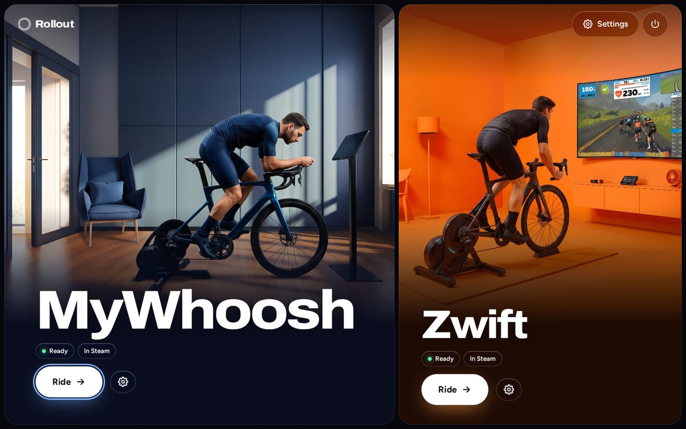
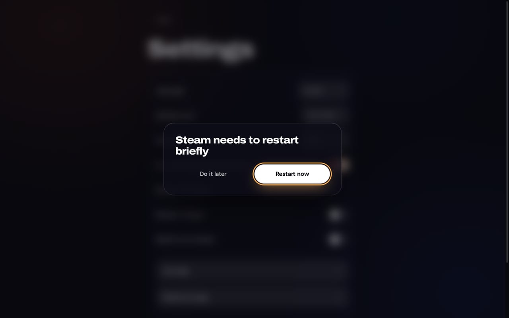

MyWhoosh
Bluetooth diretto- Rullo e fascia cardio via Bluetooth, associati nel gioco come su Windows
- Funziona con GE-Proton, scaricato e verificato per te
Rollout installa, aggiorna e avvia le tue app di ciclismo indoor. Scarica, doppio clic, pedala, tutto con il controller.
Beta: testato su ROG Ally con Bazzite. Steam Deck non ancora verificato.

Ogni app riceve la configurazione che funziona meglio su Linux. Rollout la sceglie per te.
Ogni schermata funziona con controller, touch e tastiera. Menu ed elenchi sono propri di Rollout, quindi funzionano in Modalità Gioco, dove i popup nativi falliscono.
Niente domande obbligatorie, niente terminale, niente sudo. Rollout mostra in anticipo dimensione e tempo, poi fasi chiare con l’avanzamento.
Rollout può aggiornarsi da solo in background. Ogni aggiornamento del launcher è firmato e avviato in prova; se fallisce, Rollout torna da solo all’ultima versione buona.
Un interruttore aggiunge Rollout e le tue app a Steam, con le immagini. Avvia le pedalate direttamente dalla Modalità Gioco; il tempo di gioco resta dopo gli aggiornamenti.

Per MyWhoosh, il controllo Bluetooth mostra quali rulli e fasce cardio trasmettono prima di agganciarti, e riavvia un adattatore bloccato.
Quando qualcosa va storto, Rollout dice con parole semplici cosa fare dopo, con un pulsante per riprovare. I dettagli solo se li vuoi.
Dietro «Avanzate»: versione di Proton, uscita grafica, adattatore Bluetooth, canale degli aggiornamenti, log e diagnostica. Ogni opzione mostra il valore consigliato.
Scegli il tuo sistema, scarica Rollout e aprilo in Modalità Desktop. Non serve il terminale.
Beta: testato su ROG Ally con Bazzite. Steam Deck non ancora verificato.
Download disponibile a breve.
Zwift richiede anche Podman o Docker, che SteamOS di solito non include. MyWhoosh non ha bisogno né dell’uno né dell’altro.
Download disponibile a breve.
Podman è incluso, e Zwift ne ha bisogno. Bazzite con GNOME: i file .desktop scaricati non si avviano con il doppio clic, quindi questa installazione non funziona ancora su quell’edizione. Usa l’edizione KDE.
Altre distribuzioni Linux: non supportate, a tuo rischio. Vedi GitHub.
Rollout non modifica i giochi. Guida progetti aperti che fanno già il lavoro più duro.
Gli script dei progetti sono fissati a un commit preciso e controllati con SHA-256. Gli aggiornamenti del launcher sono firmati con Ed25519.
Rollout vive in ~/.local/share/rollout. L’installazione non richiede root e non cambia pacchetti di sistema su SteamOS o Bazzite.
Zwift non ha Bluetooth diretto nel suo container, e nessuno dei due giochi è supportato ufficialmente su Linux. Rollout lo dice invece di nasconderlo.
Su Bazzite sì: Zwift gira in un container basato su netbrain/zwift, che Rollout installa e avvia. Rollout è testato su un ROG Ally con Bazzite; lo Steam Deck non è ancora verificato. Su SteamOS di solito manca prima Podman o Docker. I sensori si collegano tramite Zwift Companion sul telefono o Direct Connect, non direttamente via Bluetooth.
Sì. MyWhoosh funziona con GE-Proton e parla direttamente via Bluetooth con il tuo rullo e la fascia cardio. Li associ nel gioco, come su Windows.
Sì, con Bazzite. Installa Rollout in Modalità Desktop, poi avvia Zwift da Rollout o da Steam in Modalità Gioco. Il tuo controller guida il gioco.
No. Scarica Rollout.desktop, fai doppio clic in Modalità Desktop e conferma una volta. Poi Rollout compare nel menu delle app.
Sì. Rollout funziona con controller, touch e tastiera. In Modalità Gioco il controller guida anche Zwift.
Rollout cerca nuove versioni in background e le installa automaticamente, se vuoi. Gli aggiornamenti del launcher sono firmati e un aggiornamento difettoso viene annullato da solo.
No. Rollout è un progetto indipendente e non è collegato a Zwift, Inc., MyWhoosh o Valve. I loro termini limitano gli strumenti di terze parti non approvati e possono sospendere gli account a loro discrezione. Leggi i termini e decidi tu.
Rollout è in beta. È testato su un ROG Ally con Bazzite. SteamOS su Steam Deck è il secondo obiettivo, ma non ancora verificato. Le altre distribuzioni Linux sono a tuo rischio.